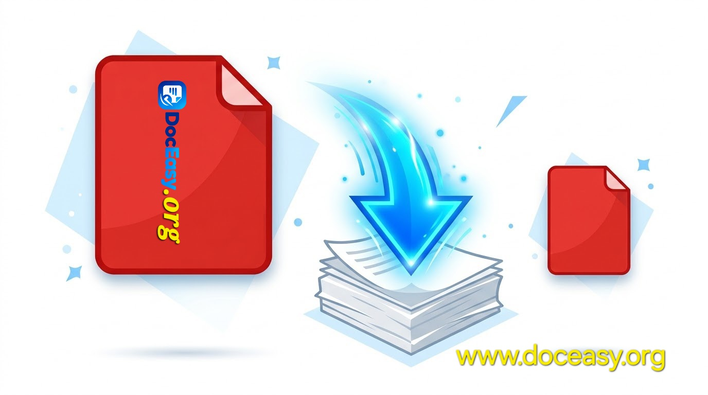

PDF Compressor
Reduce the size of your PDF files — or set a target size and let the tool hit it. 100% browser-based, your files never leave your device.
Select or Drop PDF File
Shrink your PDF in seconds — max 100 MB
Compression Level
Or Set a Target Size (Optional)
Enter a size and the tool will auto-tune quality until the PDF fits — usually landing just below your target (e.g. target 1 MB → about 0.98 MB). Leave blank to use the compression level above.
Complete Guide: How to Compress a PDF Without Losing Quality
PDF files can grow surprisingly large — especially when they contain scanned documents, high-resolution images, or many pages. Large PDFs are hard to email, slow to upload, and awkward to share. The DocEasy PDF Compressor reduces your PDF's file size directly in your browser, keeping the text sharp and images clear while dramatically cutting the size.
Unlike most online compressors, nothing you upload ever leaves your device. Everything runs locally using modern browser APIs, which makes this tool safe for sensitive documents like contracts, invoices, ID proofs, and confidential reports.

📷 [Place Demo Here: assets/images/pdf-compressor-demo.jpg]Why Compress a PDF?
- Email limits: Most email providers cap attachments at 25 MB. Compressing lets you send larger documents.
- Faster uploads: Smaller PDFs upload faster to cloud storage, forms, and job portals.
- Storage savings: Free up space on your phone, laptop, or cloud drive.
- Better sharing: Small files are easier to send on WhatsApp, Telegram, or Slack.
- Website speed: If you host PDFs on a website, smaller files mean faster downloads for visitors.
Two Ways to Compress
This tool gives you two ways to control the output:
- Compression Level: Pick High Quality, Balanced, Compact, or Screen. Fast and predictable — great when you just want a smaller file without thinking too much.
- Target Size: Enter a size like
1 MBand the tool auto-tunes the quality until the PDF fits just below your target — usually landing around 0.95–0.99 of the target (e.g. 1 MB target → about 0.98 MB). Perfect when you have a strict limit.
Step-by-Step: How to Compress a PDF
- Upload Your PDF: Drag and drop your PDF file into the upload area, or click to browse. Files up to 100 MB are supported.
- Choose a Level or a Target Size: Use the presets, or type a target size and pick KB or MB.
- Click Compress PDF: The tool re-encodes each page. If a target was set, it automatically tries multiple quality levels until the file fits.
- See the Savings: After compression, the tool shows the original size, the new size, and the percentage saved.
- Download Your File: Click "Download Compressed PDF" to save the smaller file to your device.
How the Target Size Mode Works
When you enter a target size, the tool starts with high quality and progressively reduces it. After each attempt, it checks the resulting file size. If the file is still larger than your target, it lowers the quality again. It stops as soon as the file fits — usually a few percent below your target. This guarantees you never accidentally exceed the limit you were given.
What Kind of PDFs Compress Best?
- Scanned documents: Scanned PDFs are essentially photos of pages. Compressing them can cut the size by 70–90% with almost no visible change on screen.
- Photo-heavy PDFs: Documents with many embedded photos benefit the most.
- Presentations exported as PDF: Slide decks usually contain large images. Compressing them brings the file down dramatically.
- Reports and brochures: Marketing collateral often carries high-resolution images that can be safely downsized.
Text-only PDFs (like a plain essay) are already quite small and won't shrink much — that's expected and normal.
Privacy First — Always
Everything runs in your browser. Your PDF is never uploaded to any server, never sent to a cloud, and never stored anywhere. There's no account, no email, and no tracking. When you close the tab, everything is gone. This makes DocEasy suitable for contracts, financial statements, medical records, tax documents, and any other sensitive file.
Tips for the Best Results
- Always keep a backup of the original PDF — you can never recover quality once it's reduced.
- For email, aim for under 20 MB so you have headroom below the common 25 MB cap.
- If the PDF will be printed, use High Quality to avoid visible softness.
- For WhatsApp or social sharing, Screen level or a 1–2 MB target works well.
- Text-only PDFs won't compress much — this is normal and expected.
Frequently Asked Questions
Is the PDF Compressor free?
Yes. DocEasy is completely free with no signup and no hidden limits.
Are my files uploaded to your servers?
No. Everything runs inside your browser. Your PDF never leaves your device.
Can I set a specific target size like 1 MB?
Yes. Enter 1 in the target field, choose MB, and the tool will auto-tune quality until the file fits just below your target.
Will compression reduce the quality?
It depends on the level or target. High Quality keeps images sharp. Screen level reduces quality for the smallest possible file.
What is the maximum file size?
You can upload PDFs up to 100 MB. For larger files, split the PDF first, then compress each part.
Does it work on mobile?
Yes. DocEasy works on any modern browser — desktop, tablet, or smartphone — with no app install required.
Try It Now
Ready to make your PDF smaller? Scroll up, drop your file into the upload zone, pick a preset or enter a target size, and click Compress PDF. Your new, smaller file will be ready in seconds. If you find this tool useful, share it with friends and colleagues who need a fast, private way to compress documents.